Description
Ruhotz Silvermines is a dungeon in The Gustaberg Front.
Map
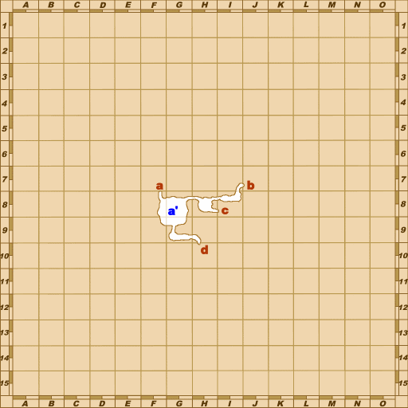
Maps retain their source annotations. Follow the mission steps for Zenith requirements; modern reference markers do not grant access. Instance galleries show alternative layouts, not a single continuous route.
Maps
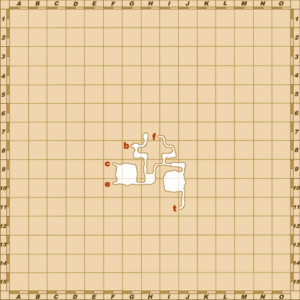
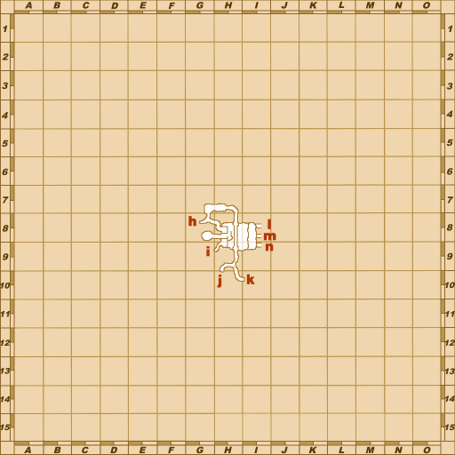
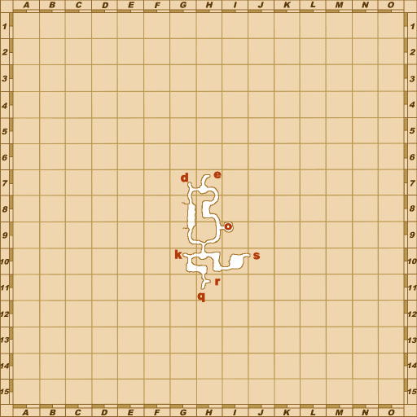
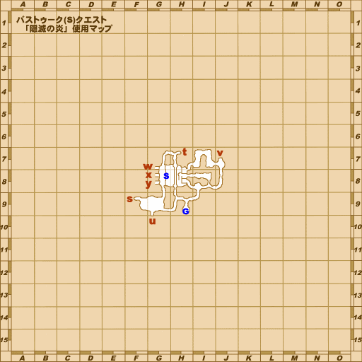
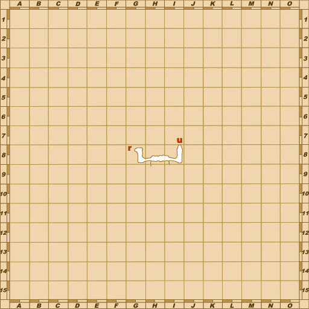
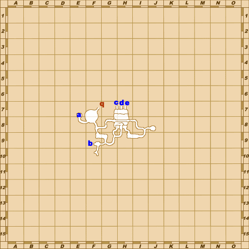
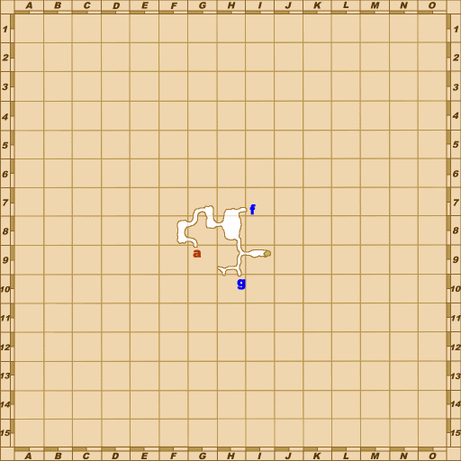
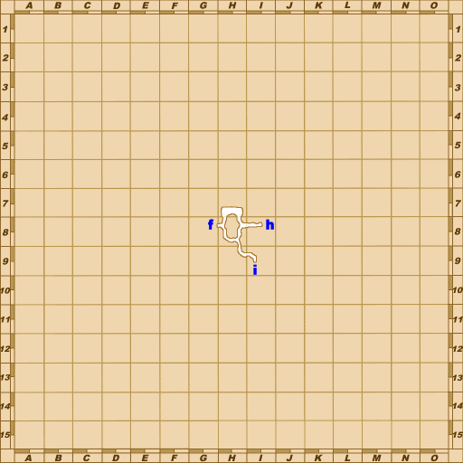
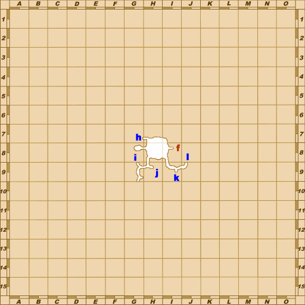
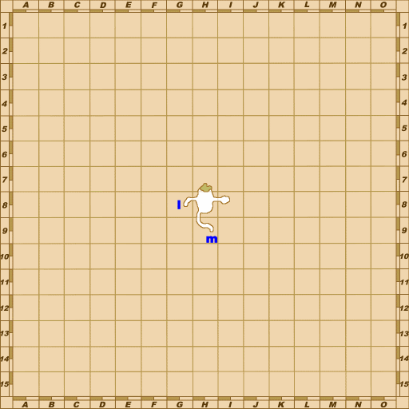
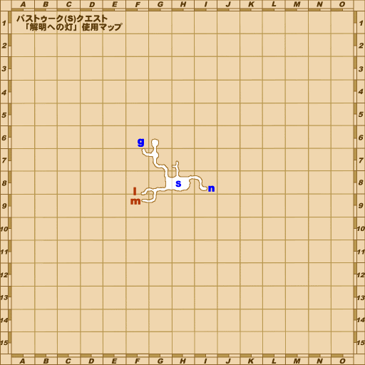
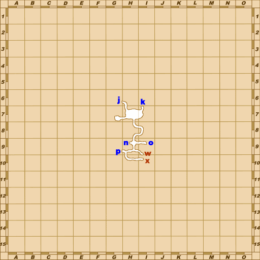
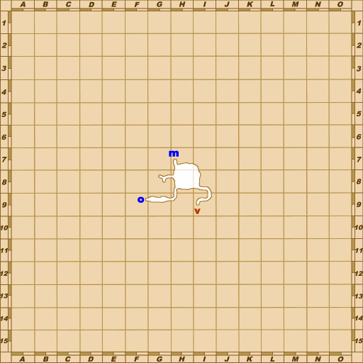
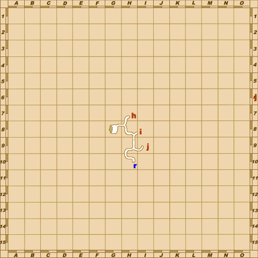
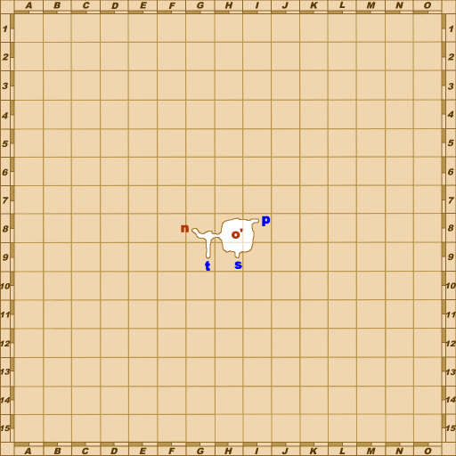
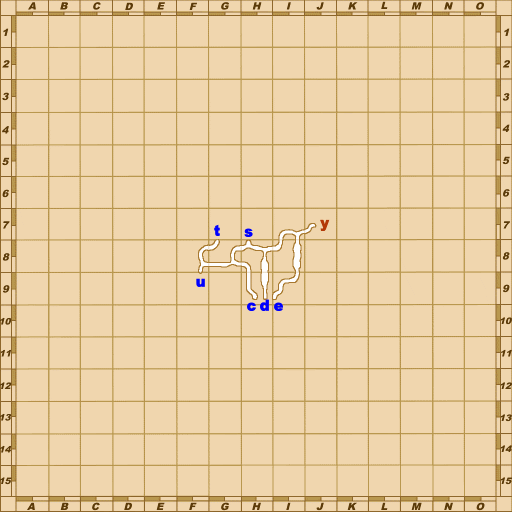
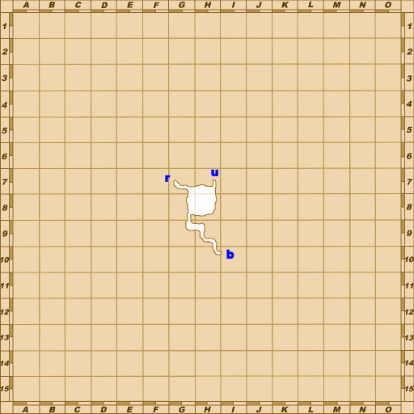
Story walkthroughs in this area
| Story | Mission / quest |
|---|---|
| WotG B-03 | Light in the Darkness |
| WotG B-06 | Fire in the Hole |
| WotG 24 | Distorter of Time |
References
External references describe their own server or retail rules. Documented Zenith changes take precedence.
Map credits: Map 1 — FF11 Database — Japanese annotations · Map 2 — FF11 Database — Japanese annotations · Map 3 — FF11 Database — Japanese annotations · Map 4 — FF11 Database — Japanese annotations · Map 5 — FF11 Database — Japanese annotations · Map 6 — FF11 Database — Japanese annotations · Map 7 — FF11 Database — Japanese annotations · Map 8 — FF11 Database — Japanese annotations · Map 9 — FF11 Database — Japanese annotations · Map 10 — FF11 Database — Japanese annotations · Map 11 — FF11 Database — Japanese annotations · Map 12 — FF11 Database — Japanese annotations · Map 13 — FF11 Database — Japanese annotations · Map 14 — FF11 Database — Japanese annotations · Map 15 — FF11 Database — Japanese annotations · Map 16 — FF11 Database — Japanese annotations · Map 17 — FF11 Database — Japanese annotations · Map 18 — FF11 Database — Japanese annotations. Original game maps © SQUARE ENIX; redrawn maps retain the credited authorship and license.